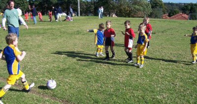
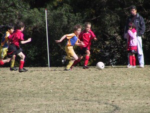
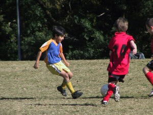
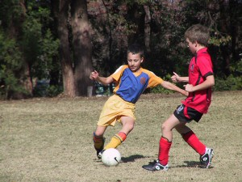
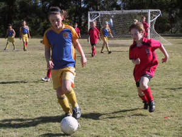
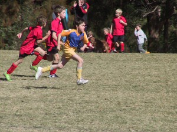
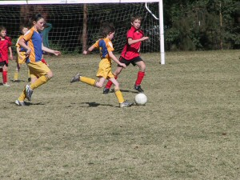
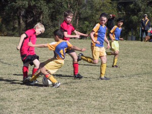
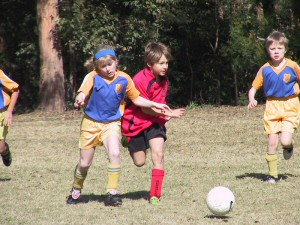
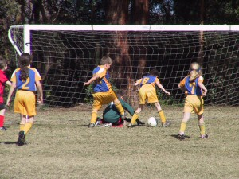

| Match Report - 08 August 2009 |
|
|
|
|
|
|
|
|
|
|

This game started well for our team, as they seemed to be a fairly evenly matched
against Putney. However, they started with a number of their gun players on the
bench so when the purples started to tire, the Putney rangers started to make headway.
This week Supercoach Marc managed to get the players to remember two key things:
-
When we are in defence, stand near our goal, and kick it away from the goal if
it comes near you; and
-
When we kick the ball, try and kick it to one of your own players, or at the
very least don't kick it towards your own goal.
This worked fairly well despite what the score suggests, with a solid defensive
effort from all of the North Ryde players near our goal. When we were close to our
line, we showed courageous defence as the purple team formed an impenetrable wall
at the goal line. All the players chipped in, so the Rangers were unable to crack
the defence when we were in this formation.
Unfortunately, as many of the Putney boys were older, and as a result much faster,
not even Lukah could catch them when they made a break down field, and that's where
their points came from... except the goal where we kicked off to them, then they
kicked it back through all our players into the goal. It was the quickest goal all
year and our easiest restarts all year, as no one had actually moved.

Three long range goals from Lukah bought some
respectability to the score, which might have looked even better if we had been
able to count Jasmine's first half goal. Will had a solid half of football starting
the game and playing right through to half time uninterrupted. Good defence from
Jasmine, Lucas and
Cameron. Jayden was very brave
and came back on to play, despite a big hit by a big kick, that would have otherwise
been a goal to them.
Congratulations to the Player of the Week - Lukah

- Graeme Last (Superdad)
|
|
|
| U6 Red C |
|
North Ryde Red C - North Ryde Red A
|
|
|
|
We did some good passing and Vivek scored a great goal. The other team played
really well and I [cong]ratulate them.
- Fletcher Gusse (Player, aged 6)
|
|
|
|
|
|
North Ryde turned up ready for a big contest against the 2nd place team. We had
beaten them once 2 - 0 and they had beaten us 2 - 4. Adam was captain for the match
and rallied his troops for an exciting match.
From the first whistle, North Ryde was hungry for the ball and ran and passed the
ball well. Adam got hold of a ball and passed it into the space for Shannon to run
on and beat the goalie and score in the 2nd minute of the match. 1 - 0.
David ran hard all match after recovering from the flu earlier in the week and if
he wore a GPS he would have clocked up over 5km's in distance.
Jack Bell was in goals first half and made some excellent saves that were kicked
hard straight at him. The back line of Jett, Tom M and Tom H made his job a lot
easier with excellent defence.
Adam had another chance later in the first half but just missed. Half time came with
North Ryde winning 1 - 0.
In the second half, North Ryde again came out firing with Adam and Shannon up front
putting pressure on the opposition goalie, but with no luck. He was too good and
saved all of our chances.
Eli, Anthony and Patrick worked hard in the mid-field all match, but had to do more
work in defence than attack.
WPH Cherrybrook made a break in the 26th minute and managed to get past North Ryde's
mid-field. They took a long range shot because they knew they couldn't dribble it
past the backs and goalie and it sailed over Harrison's head in goals to level the
match 1 - 1.
North Ryde kept trying to get the ball through to the strikers but was unable to get
any more shots in. The match ended in a 1 - 1 draw with 2 very exhausted teams. It
was an excellent match to watch and was played in good spirit. Well done to all the
boys and watch out Normanhurst next week!
- Shannon (Striker) and Pauline (Coach)
|
|
|
|
|
|
The weather was good on Saturday. Our team was lucky to be able to play as some of
the fields at Meadowbank had been closed. 10:15 in the morning was also a nice time
to start the game. Our entire team turned up for the match and first cheered on the
U10's match before playing our own game.
What a tight game! It ended in a 0 - 0 draw. We are proud of the team and the effort
they made. Their positioning and support have improved a lot. The whole team was
outstanding and they deserved to be the Players of the Week.
The Mighty Sam powered up for the ball and supported Rhea. The Super Hamish was full
of energy and ran everywhere. Matthew and Andrhea had stopped the opposition from
further attempts at goal. And we can't forget the goalies Thomas S and Ryan who
produced big high kicks over the opposition players.
Our forward team, Rhea, Sam, Oscar and Hamish had a lot of good passing, and just
missed scoring a goal. Peter and Thomas O past the ball well to each other. We had
a lot of corner kicks, and the team defended well with good support from Anaya and
Satya. Our left (Matt) and right (Thomas S) kickers had an even match with the other
team. There were a lot of high balls and headers in the game.
Good game! We love it! And we need a goal!
- Mandy Van (Team Manager)
|
|
|
|
|
|
A great but hard start to the last game of the season. I think that it has been the
best game of the year because we dribbled, ran, passed, tackled, and shot better
than ever before.
Chris scored the opening goals. A lucky goal from the Redbacks took place and I
wasn't happy.

At the end of the match Luke scored the 3rd and last goal of the season and the
match... but wait until next year!
On behalf of the kids, I would like to thank the coaches (Andrew and Tony) and the
managers (Kim and Annie) for making this season jam-packed with fun and excitement.
- Lucy Pennington (Player)









|